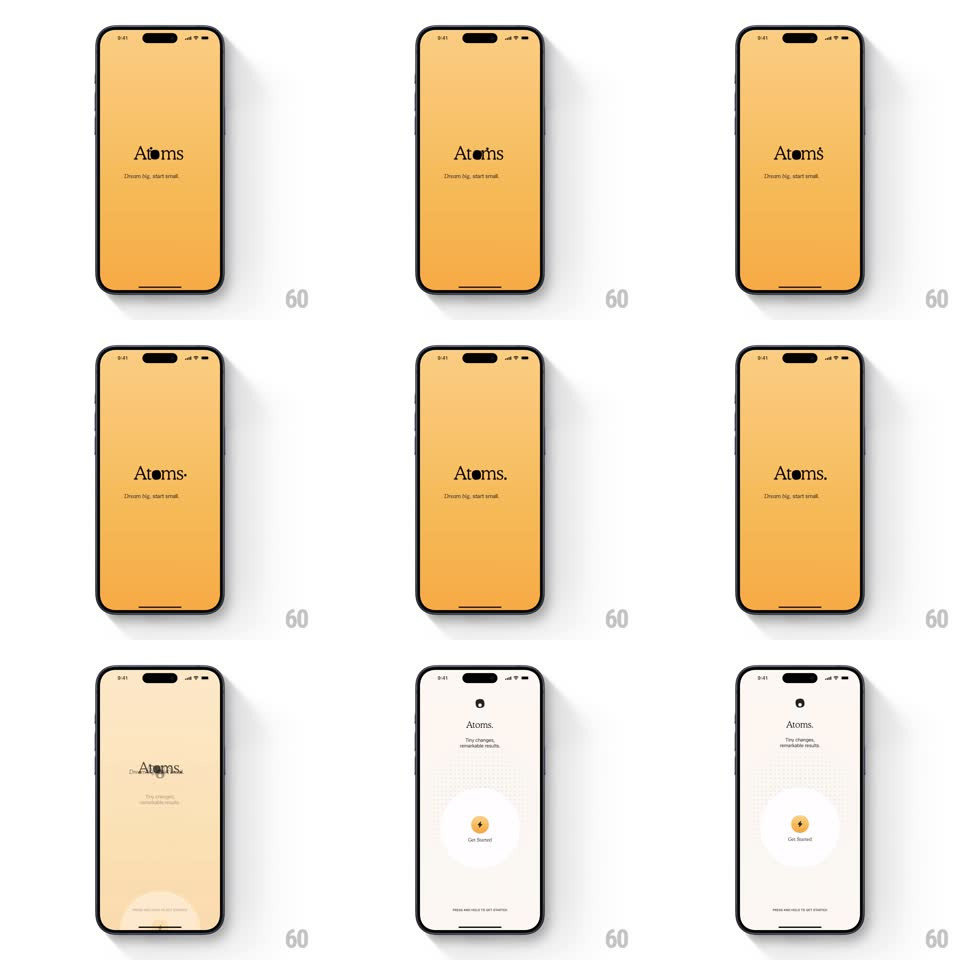

Media
Frame-by-frame

Rebuild this animation 1:1: Atoms' splash - a full-bleed orange screen where the serif wordmark's "o" orbits like an atom, then the entire orange field collapses into the Get Started button.

Rebuild this animation 1:1: Atoms' splash - a full-bleed orange screen where the serif wordmark's "o" orbits like an atom, then the entire orange field collapses into the Get Started button. ## Integration Integration: stack-agnostic spec - springs given as stiffness/damping, timed motions as duration + curve; map every value to your framework and animation library of choice. ## Scene Full-bleed warm orange screen: the "Atoms" serif wordmark centered with the tagline "Dream big, start small." - the "o" in Atoms is a small dot orbiting a nucleus point. On transition, the orange field shrinks into a small orange circular "Get Started" button on a cream background as the onboarding content fades in. ## Motion spec Pattern: orbiting logotype + background-to-button collapse. - Splash (0-1.6s): the "o" dot orbits its nucleus (1 revolution per 1.2s, linear, with a faint elliptical trail) while the wordmark letters settle in (tracking +0.06em to 0, 400ms); the tagline fades up 150ms later. - Collapse (1.6-2.3s): the orange background shrinks from full-bleed toward the screen's center-bottom (border-radius growing 0 to full pill as it contracts, 500ms, ease-in-out), the wordmark and tagline fading as the field passes them; the cream onboarding screen reveals underneath. - Landing (2.3-2.7s): the orange field arrives as the circular Get Started button (icon + label fading in inside it, 250ms) with a soft settle bounce (scale 1.06 to 1, spring ~420/22). - The "o" dot from the wordmark becomes the button's icon dot - one continuous element through the collapse. ## Calibration - The collapse path is a single bezier from fullscreen rect to button rect - no intermediate jumps; corner radius tracks progress. - The dot never stops moving through the transition: its orbit decays into the button icon's rest position. ## Reduced motion Splash crossfades to onboarding; button fades in. ## Don't miss - The button's orange is the splash's orange exactly - the background literally became the button. - Serif wordmark on orange; sans UI on cream - the type shift marks the mode change.